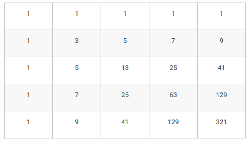
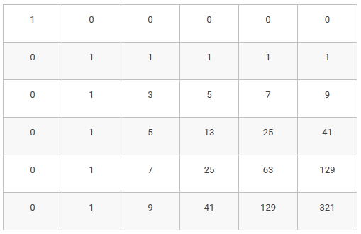

Подсчет числа маршрутов
Рассмотрим шахматную доску в левом верхнем углу которой находится король. Король может перемещаться
только вправо, вниз или по диагонали вправо-вниз на одну клетку. Необходимо определить количество
различных маршрутов короля, приводящих его в правый нижний угол.
Сопоставим каждой клетке ее координаты (i,j), где i будет обозначать номер строки на доске, j —
номер столбца. Нумеровать строки будем сверху вниз, столбцы — слева направо, нумерация начинается с
0. Тогда начальное положение короля будет клетка (0,0).
Обозначим через F(i,j) количество способов прийти из клетки (0,0) в клетку (i,j). В клетку (i,j)
можно прийти из трех клеток — слева из (i,j−1), сверху из (i−1,j) и по диагонали из (i−1,j−1).
Поэтому число маршрутов ведущих в клетку равно числу маршрутов из всех ее предшественников, а
именно:
F(i,j)=F(i,j−1)+F(i−1,j)+F(i−1,j−1)
Отдельно нужно задать значения для граничных клеток, то есть когда i=0 или j=0. В результате
получится таблица заполненная следующим образом:

Для заполнения этой таблицы и подсчета числа маршрутов можно использовать следующую программу, в
которой сначала создается двумерный список, затем заполняются крайние клетки (первый столбец и
первая строка), затем заполняются остальные элементы таблицы при помощи приведенного выше
рекуррентного соотношения. В данном примере n - число строк, m - число столбцов на доске.
F = [[0] * m for i in range(n)]
for i in range(n):
F[i][0] = 1
for j in range(m):
F[0][j] = 1
for i in range(1, n):
for j in range(1, m):
F[i][j] = F[i][j - 1] + F[i - 1][j] + F[i - 1][j - 1]
На этом примере можно составить общий план решения задачи методом динамического программирования.
Этот план можно использовать для решения любых задач при помощи динамического программирования:
- Записать то, что требуется найти в задаче, как целевую функцию от некоторого набора
аргументов
(числовых, строковых или еще каких-либо).
- Свести решение задачи для произвольного набора параметров к решению аналогичных подзадач для
других
наборов параметров (как правило, с меньшими значениями параметров). Если задача несложная,
то
полезно бывает выписать явное рекуррентное соотношение, задающее значение функции для
данного набора
параметров.
- Задать начальные значения функции, то есть те наборы аргументов, при которых задача
тривиальна и
можно явно указать значение функции.
- Создать массив (или другую структуру данных) для хранения значений функции. Как правило,
если
функция зависит от одного целочисленного параметра, то используется одномерный массив, для
функции
от двух целочисленных параметров — двумерный массив и т. д.
- Организовать заполнение массива с начальных значений, определяя очередной элемент массива
при помощи
выписанного на шаге 2 рекуррентного соотношения или алгоритма.
Для заполнения первой строки и первого столбца таблицы мы использовали «специальную» формулу,
отличающуюся от общего случая. Но в некоторых задачах удобней бывает все значения вычислять по одной
и той же формуле, а для граничных значений функции ввести специальные «фиктивные» элементы. В данной
задаче тоже можно так поступить — введем специальную «каемочку» из одного фиктивного столбца слева и
одной фиктивной строки сверху таблицы.
Для того, чтобы значения в остальной таблице вычислялись по общим формулам, во все клетки каемочки
нужно записать число 0, кроме клетки (0,0), в которую будет записано значение 1:

Теперь во всех остальных клетках таблицы значения могут быть вычислены по общей формуле:
F(i,j)=F(i,j−1)+F(i−1,j)+F(i−1,j−1), а программа может выглядеть так:
F = [[0] * (m + 1) for i in range(n + 1)]
F[0][0] = 1
for i in range(1, n + 1):
for j in range(1, m + 1):
F[i][j] = F[i][j - 1] + F[i - 1][j] + F[i - 1][j — 1]